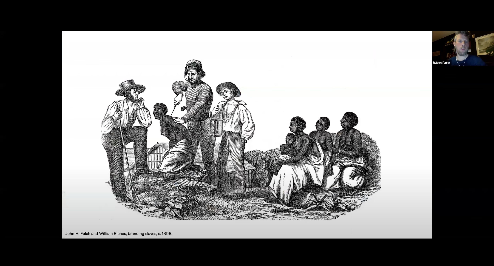
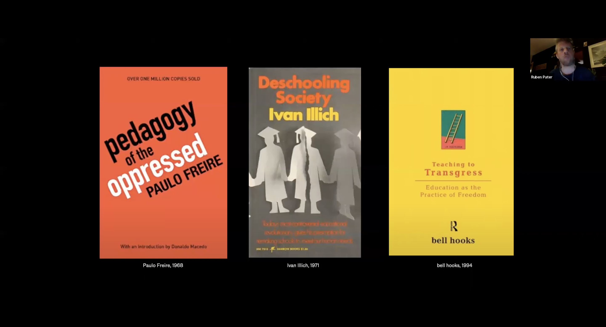

<p>Ruben Pater CD Lecture
    <br>
	Ruben Pater is an individual that works between journalism and graphic design. Ruben’s work focuses on the creation of visual narratives that support solidarity and justice. Additionally, Ruben’s work also talks about politics of design within his book and cultural biases as well. Ruben presents himself and his work in a way that is very influenced by modern day politics. For instance, Ruben talks about the role of graphic design in capitalism, how his work had driven his perception of politics within the scope of design. Furthermore, capitalism seems to be a recurring theme within his work, with how Ruben talks about the impacts of a capitalistic economy and society, capitalistic practices of brands and the negative influence it has on consumers, the impacts of a capitalistic society on the homeless, and more. Moreover, Ruben brings up very non-conventional topics such as branding practices of companies and its relation to slavery. Ruben also talks about the scope of graphic design within politics, such as the space of the different political compasses, oppression, problems with the educational system in relation to hierarchy, societal principles and more. Overall, Ruben’s work is very influenced and driven by political subjects and topics.
</p>

